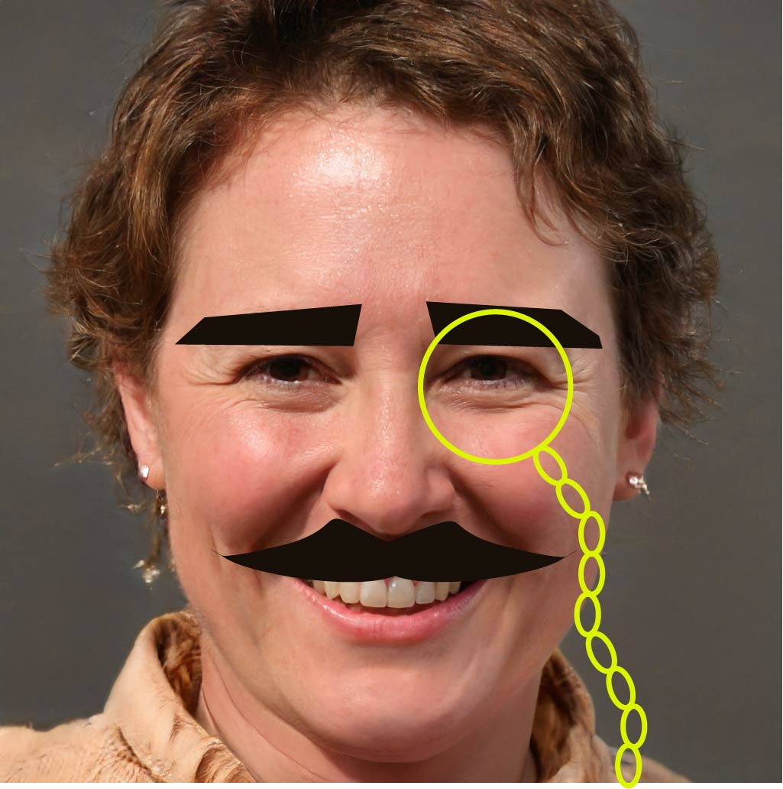

MARY J. SAMPSON
August 10, 2017
Mr. Michael PrestonIt might seem strange that I get excited thinking about colors, typography and cascading style sheets, but my passion for all aspects of graphic design has remained strong throughout my 10-year career. I am very interested in the graphic designer position posted on Monster, and hope to have the chance to interview for this exciting opportunity.
My background includes corporate, agency and freelance graphic design experience, with a history of leading print, interactive and digital design projects to acclaimed completion. I have worked on nationwide and international marketing, advertising, product launch and image campaigns for global brands and companies, including DEFCO, GHI Co-op and JKL Assoc., Inc., as well as a host of startup and mid-size businesses.
I am backed by a BA in graphic design and proficiencies in Adobe Creative Suite, HTML, HTML5, CSS, WordPress and a range of other design, video, web, wireframe and multimedia software.
Dedicated to bringing brands to life through omni-channel marketing programs, my key focus is to exceed client and employer expectations. I enjoy collaborating with clients, creative teams and production professionals to deliver design solutions propelling web traffic, social media engagement, response rates and customer-acquisition results.
Mary Sampson is the only designer we will go to in the future to design our brochures. We had a bad experience with a previous company and were hesitant to start again, but our experience with Mary so different, in a good way! We received a brochure that exceeded anything we had imagined and it perfectly captures our business.- Marco Polilo, President, DEFCO.
The talent and quality of Ms. Sampson's work was OUTSTANDING! It was also very quick and very efficient given some short deadlines.- Zacharia Tripp, CEO, GHI Co-op
Great logo design options, efficient process - we got the best possible outcome and it was a good customer experience. We are over the moon happy with our new corporate logo, and will definitely be using you again!!-Yulia Villanova, Lead Designer, JKL Associates, Inc.
Design is not just what it looks like and feels like. Design is how it works.